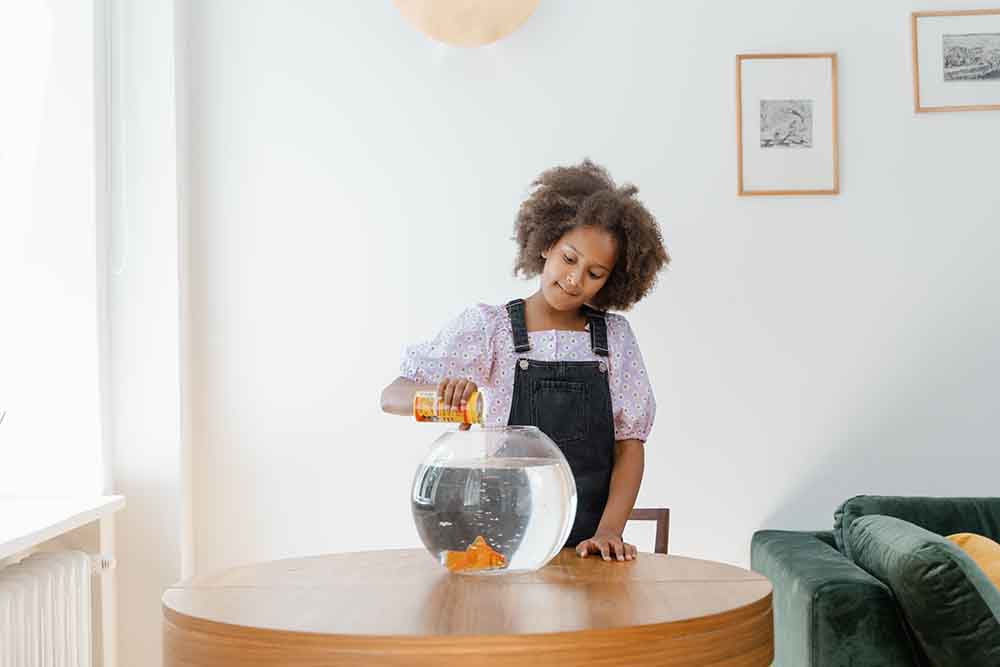

This is my fish, I got him back in August of 2023 at a carnival, his name is Fisher. He/She is a gold fish.I have learn so mush about having a fish. The responsibility of learning to take of a fish and what it needs to survive. In this wed page I will give you information about the essentials of taking care of fishes or fish. A long with different type of fishes out there, the size aquarium you will need for how many fish you'll get in one tank and the resource to keep the water clean and healthy for the fish.
When trying to by a fish. It all depends on what type of fish your looking to buy, pet stores usually have a wide section to chose from. Aquarium stores have employees well educated to teach new fish owners.They can guide you to make sure you select the right fish and the equipment for that type of fish. When looking for a specific breed, you might want to look into a specialized fish breeder. Pet stores get their fish from a commercial breeder.
One interesting fact about fish is that don't have stomach, so they basically they don't stop eating. However that does not mean keep feeding it. You only need to feed the fish twice a day. You will need to do research of the type of fish you have. Overfeeding fish is a common mistake for owners to make.
A plus about fish ownership is that you can buy it a automatic feeder or food block for the inside of the aquarium. When you go away, rather than finding someone to take care of your fish or feed them. Goldfish cal last a week without food but that doesn't mean to not feed them, or wait that long between feedings.
This is a video from youtube on what you should feed you get goldfish and different information about diets for your fish.
Learn more about goldfish